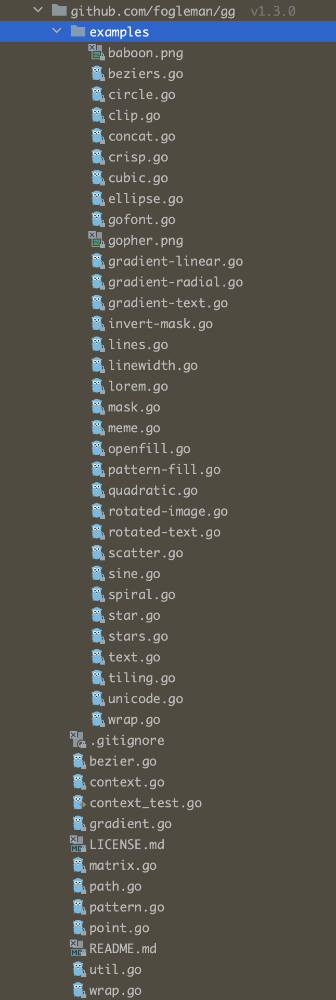
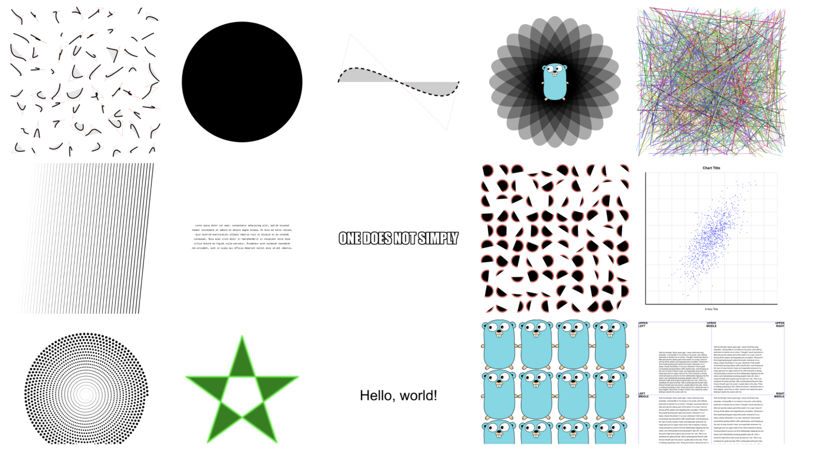
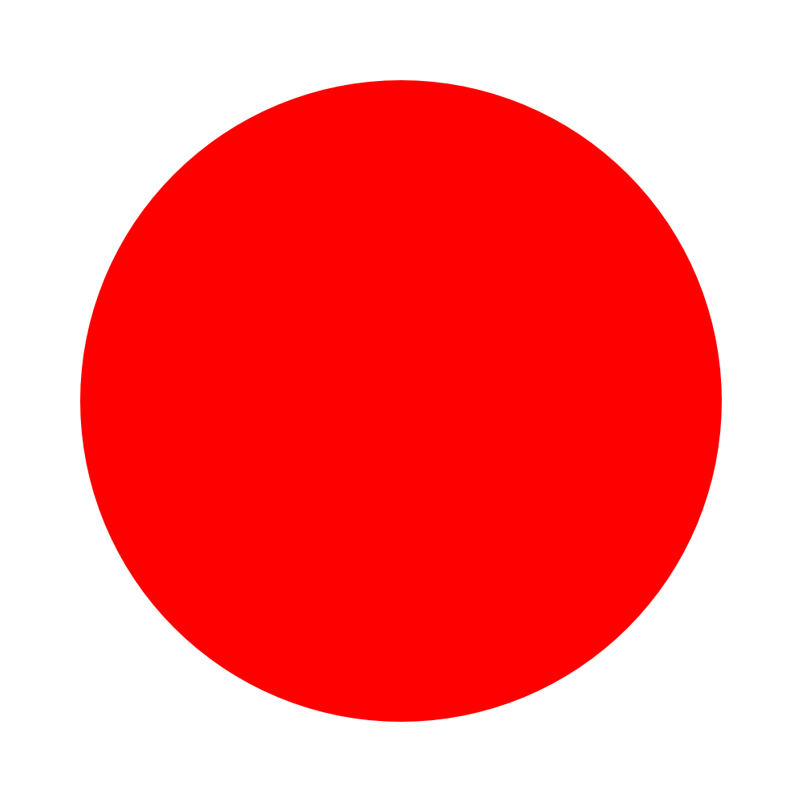
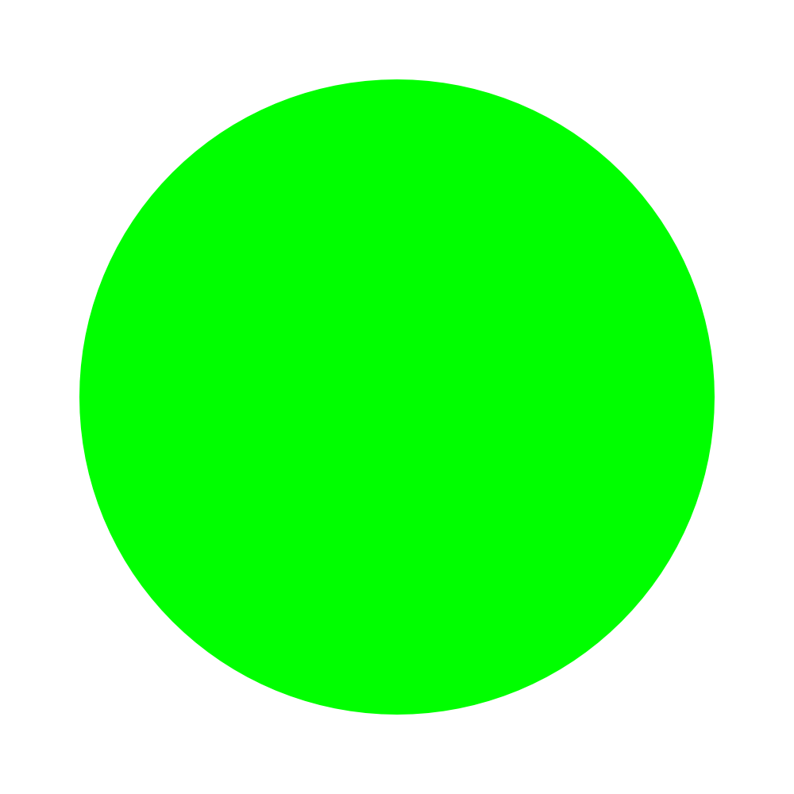
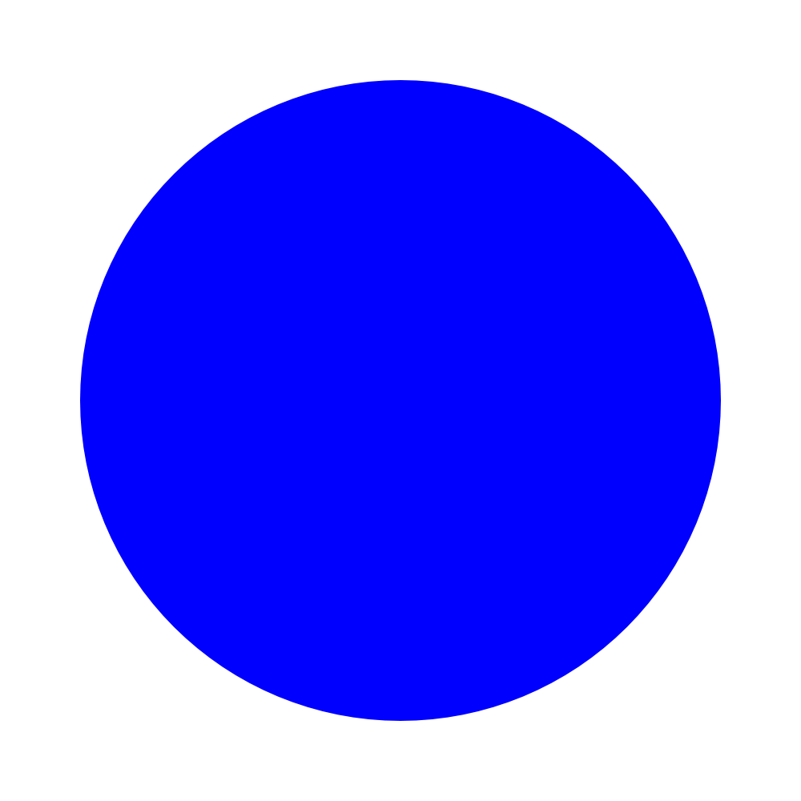

最近接了个比较大的需求，需要做很多图片处理的事情，比如图片的旋转裁截拼接，各种渐变处理，文字排列，一开始光是想想就头疼。但没有办法，既然已经需求已经到手上了，那就得把它做好才行，于是便开始被迫营业，无证上岗了。
经过一番查找，找到了一个Go语言图片处理的库，经过调研发现还挺强的，能满足需求，于是决定写点文章，记录一下使用心得，以便日后不时之需。
gg 库的安装和简单使用
使用之前，我们当然得先来安装一下这个库：
go get -u github.com/fogleman/gg这个库的一个好处是有很多测试代码，可以拿来跑跑看，就知道它大概能实现什么样的效果了。

这是它例子的大概效果图，可以看到，能实现的图形效果还是挺多的。

我们拿其中的一个代码来简单体验一下：
package main
import "github.com/fogleman/gg"
func main() {
dc := gg.NewContext(1000, 1000)
dc.DrawCircle(500, 500, 400)
dc.SetRGB(0, 0, 0)
dc.Fill()
dc.SavePNG("out.png")
}duang 的一下，一张黑不溜秋的圆形图就生成了。
关于上面的代码，下面会进行逐一说明。
调整生成图片的大小
dc := gg.NewContext(1000, 1000)这是先初始化一个 Context 对象，使用库之前都需要先初始化一个 Context 对象，后面的两个 1000，分别对应着最终生成图片的宽度和高度。我们可以修改一下高度为 500 看看效果。
dc := gg.NewContext(1000, 500)可以看到图片被腰斩了，高度矮了一半，同样修改宽度参数也可以得到类似的效果，这里就不演示了。
调整圆形参数
dc.DrawCircle(500, 500, 400)这里是画一个圆心位置在 (500,500)，半径为 400 的圆形。需要说明的一点是，这里的坐标轴是以左上角为原点的，水平向右是横轴正方向，竖直向下是纵轴正方向，所以(500,500)正是中心位置。我们可以调整一下参数值来看下效果。
dc := gg.NewContext(1000, 1000)
dc.DrawCircle(300, 300, 400)
可以看到，圆心往左上角移动了。还可以调整一下半径参数试试：
dc := gg.NewContext(1000, 1000)
dc.DrawCircle(300, 300, 300)这样我们又得到了一个完整的圆。
调整颜色
dc.SetRGB(0, 0, 0)
dc.Fill()这两句的意思是先设置颜色值为 (0,0,0)，也就是黑色，乍眼一看这三个值分别对应的是颜色的 R、G、B值，但实际上完全不是这么回事，这里需要注意的是，这三个值分别代表红色、绿色、蓝色的程度，所以如果分别设置为，会得到下面的三张图。



那如果想要根据RGB值来设置颜色该怎么处理呢？其实也很简单，做一个压缩映射即可，RGB值的范围是0～255，表示的含义也是对应色值的程度，这里不过将范围变成了0～1，那我们将需要使用到的值除以255就可以得到对应的映射值了。具体的颜色RGB值跟颜色的对应关系可以在网上搜到。
https://tool.oschina.net/commons?type=3
下面我们用淡黄色做一个例子，对应的 RGB 值是 (255,222,173) ，我们添加一下映射转换的代码即可：
var rbgConverter = func(r []float64) []float64 {
result := make([]float64, 0)
for i := 0; i < len(r); i++ {
result = append(result, r[i] / 255)
}
return result
}
func main() {
dc := gg.NewContext(1000, 1000)
dc.DrawCircle(500, 500, 400)
rgb := []float64{255,222,173}
newRgb := rbgConverter(rgb)
dc.SetRGB(newRgb[0], newRgb[1], newRgb[2])
dc.Fill()
dc.SavePNG("out.png")
}这样我们就得到了一张黄图。

保存图片
dc.SavePNG("out.png")SavePNG() 方法可以将当前图形保存成 PNG 格式文件，路径可以是相对路径，也可以是绝对路径。
SaveJPG() 方法可以将当前图形保存成 JPG 格式文件。
当然，这里的两个方法其实也只是包装了一下，点进代码可以看到，里面并没有什么奇奇怪怪的逻辑。
// SavePNG encodes the image as a PNG and writes it to disk.
func (dc *Context) SavePNG(path string) error {
return SavePNG(path, dc.im)
}
func SavePNG(path string, im image.Image) error {
file, err := os.Create(path)
if err != nil {
return err
}
defer file.Close()
return png.Encode(file, im)
}所以，我们也可以根据自己的需要将图片保存成其它格式或者存到其它地方。
加载图片
加载图片有三个方法可以实现，LoadPNG() 用来加载 PNG 格式的图片，LoadJPG() 用来加载 JPG 格式的图片，如果不清楚该用什么方法，可以直接使用 LoadImage() 方法来加载图片。
加载图片后，得到的是一个 image.Image 对象，可以通过该对象来获取图片的一些基本信息，如：图片的长和宽、图片某一点的颜色RGB值。
加载图片之后，可以使用 DrawImage() 方法来将图片绘制出来，以便用于后续操作。
im, err := gg.LoadImage("/Users/bytedance/Desktop/test.jpg")
if err != nil {
panic(err)
}
w := im.Bounds().Size().X
h := im.Bounds().Size().Y
dc := gg.NewContext(h, w)
dc.DrawImage(im, 0, 0)裁剪
有一个经常使用到的方法叫 Clip() ，该方法可以将图像进行裁剪，裁剪的形状取决于之前画的图形。
下面来举个例子，这是我们要裁剪的图，我们用一个圆形来对它进行裁剪。
func main() {
// 加载图片，这里路径换成自己的
im, err := gg.LoadImage("test.jpg")
if err != nil {
panic(err)
}
// 获取图片的宽度和高度
w := im.Bounds().Size().X
h := im.Bounds().Size().Y
dc := gg.NewContext(h, w)
// 取宽度和高度的最小值作为直径
radius := math.Min(float64(w), float64(h)) / 2
// 画圆形
dc.DrawCircle(float64(w/2), float64(h/2), radius)
// 对画布进行裁剪
dc.Clip()
// 加载图片
dc.DrawImage(im, 0, 0)
dc.SavePNG("out.png")
}
这样一来，头像就做好了【手动狗头】。
小结
Go 语言也可以实现对图片进行很多类型的操作，今天主要介绍了图片的加载、保存、绘制圆形、调整大小和颜色以及裁剪。之后还会进一步介绍其它功能。
我觉得如果不是需要使用并没有熟悉它的必要，但知道有这么个东西，知道它能实现什么样的效果，可以让你手上的牌又多了一张，以后有需要的时候便不至于捉襟见肘了。所以还在等什么，赶紧点赞收藏加关注吧～